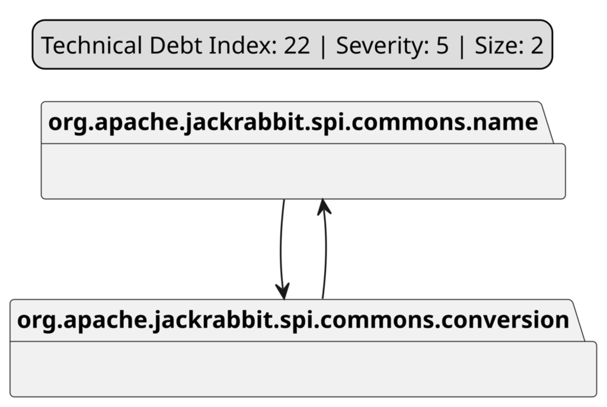
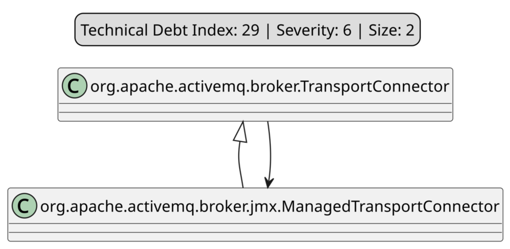
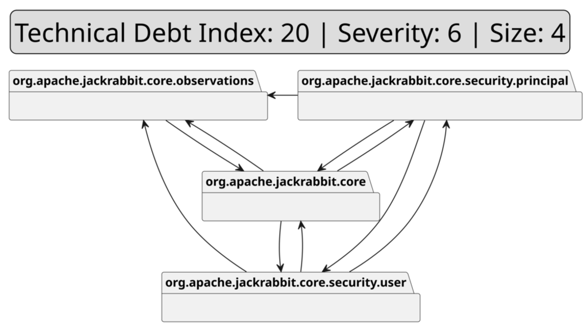

Visualizing the Empirical Evaluation Framework, Architectural Smells, and Code Refactoring Mechanisms
This diagram represents the entire replication pipeline: extracting 7 open-source systems, running architectural smell detection (Arcan, Designite, Understand), implementing refactoring strategies across 3 codebase versions (Init, noModularity, noDependency), and evaluating across three dimensions (RQ1 Quality, RQ2 Security, and RQ3 Performance).
| Pipeline Stage | Tools & Frameworks | Key Objectives |
|---|---|---|
| Smell Detection | Arcan, Designite, Understand | Identify Cyclic Dependency (CD), Cyclic Hierarchy (CH), Unstable Dependency (UD), and God Components |
| Refactoring Layers | Manual Refactoring with 100% Test Suite Passing | Create noModularity and noDependency versions alongside Init baseline |
| RQ1 Quality | Understand, Designite, Jupyter nbconvert | Package and class-level WMC, CBO, LCOM, DIT, NOC, FANIN, FANOUT |
| RQ2 Security | SonarQube, SpotBugs | Vulnerabilities, Security Hotspots, CWE categories |
| RQ3 Performance | JProfiler 15, Python Telemetry Calculator | CPU process/system load, Committed/Used/Free Heap memory, Allocation counts over 10 repeated runs |
Definitions, structural root causes, and refactoring strategies for the primary architectural smells evaluated in the study.
Problem: Cyclic dependency detected by Arcan between two packages with Technical Debt Index 22 and severity 5.
Refactoring: Created a dedicated exception package and moved MalformedPathException alongside other system exceptions, centralizing exception handling and breaking the cycle.

Problem: Unnecessary hierarchical dependency between two classes in different packages, where child was essentially a duplication of parent with minor modifications.
Refactoring: Merged ManagedTransportConnector into TransportConnector, consolidating logic into a single class and eliminating cyclic inheritance.

Problem: Package org.apache.jackrabbit.core.security.principal depended on less stable elements (TDI 20, severity 6).
Refactoring: Extracted dependencies into a new utility class SecuritySessionImplManager placed in a dedicated util package, satisfying the Stable Dependencies Principle.
